배우기 전에 먼저 해 보세요. 틀려도 괜찮아요.
die größte Stadt는 무슨 뜻일까요?
-st-가 들어가면 '가장'이에요.
Je länger ich überlege, desto schwieriger wird es.는 무슨 뜻일까요?
je … desto는 '~할수록 더'예요.
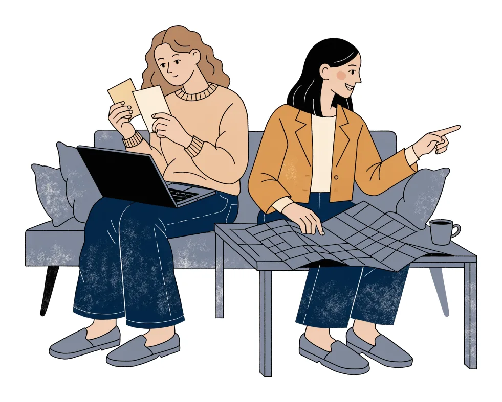
어디에서 살지는 큰 결정이에요. 큰 도시와 작은 도시, 도시 한복판과 변두리마다 얻는 것과 잃는 것이 있어요. 이 과에서는 die größere Stadt, die höchsten Mieten처럼 비교하는 말을 명사 앞에 쓰는 법과 관사 없이 쓰는 형용사를 배워요. je … desto로 두 가지가 함께 달라지는 것도 말해요.
문법 Komparativ und Superlativ vor dem Nomen, Adjektive ohne Artikel, je … desto
과제대학대학 도시 두 곳을 비교해 고르기
과제직장이직하면서 살 도시를 비교해 정하기
이 과를 마치면 사는 곳의 장단점을 견주고, 통계를 읽고 말하고, 바라는 삶을 설명할 수 있어요.
이 과에서 쓸 말이에요. 눌러서 먼저 들어 보세요.
배우기 전에 먼저 해 보세요. 틀려도 괜찮아요.
die größte Stadt는 무슨 뜻일까요?
-st-가 들어가면 '가장'이에요.
Je länger ich überlege, desto schwieriger wird es.는 무슨 뜻일까요?
je … desto는 '~할수록 더'예요.
Lektion 5의 낱말 다섯 개를 다시 떠올려 보세요.
1월의 일요일 오후, WG 거실이에요. Lena는 여름에 학사 과정을 마쳐요. 석사 과정은 다른 도시에서 하려고 해요.
들으면서 찾아보세요. Lena에게 가장 중요한 것은 무엇인가요?
수요일 점심때, 회사 구내식당이에요. 회사가 여름에 함부르크에 새 사무실을 열어요. Frau Hoffmann이 Dohyun에게 그 사무실을 맡을 생각이 있는지 물었어요.
들으면서 찾아보세요. Dohyun은 언제까지 결정해야 하나요?
어학원 수업 시간이에요. 오늘의 주제는 어디에서 살고 싶은가예요. Frau Becker가 어린 시절 이야기를 해요.
들으면서 찾아보세요. Sora는 어떤 집을 꿈꾸나요?
세 대화를 듣고 답하세요.
두 도시 가운데 어느 쪽이 더 큰가요?
In Freiburg sind die Mieten niedriger als in Leipzig.
라이프치히의 집세가 더 낮아요.
Lena에게 가장 중요한 것은 무엇인가요?
회사는 Dohyun에게 무엇을 제안했나요?
Sujin möchte sofort nach Hamburg umziehen.
달가워하지 않아요.
Dohyun은 언제까지 결정해야 하나요?
Frau Becker는 어디에서 자랐나요?
Sora träumt von einem Haus mit Garten am Stadtrand.
낱말 52개예요. 낱말이나 예문 앞의 단추를 누르면 소리가 나요. 명사는 der, die, das를 색으로 구분했어요.
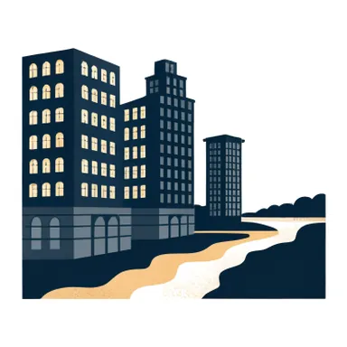
die Großstadt, die Großstädte 큰 도시
Ich kenne nur das Leben in der Großstadt.저는 큰 도시의 생활밖에 몰라요.
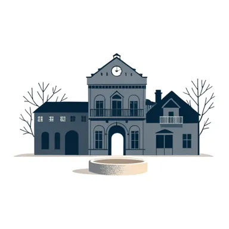
die Kleinstadt, die Kleinstädte 작은 도시
In der Kleinstadt kennt jeder jeden.작은 도시에서는 다들 서로 알아요.
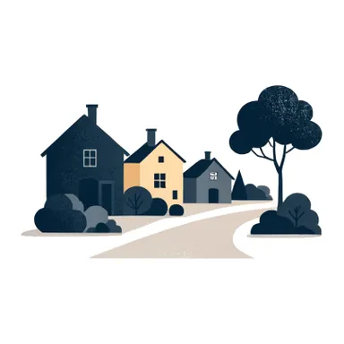
der Vorort, die Vororte 도시 바깥 동네
Wir wohnen in einem Vorort von Frankfurt.우리는 프랑크푸르트 바깥 동네에 살아요.
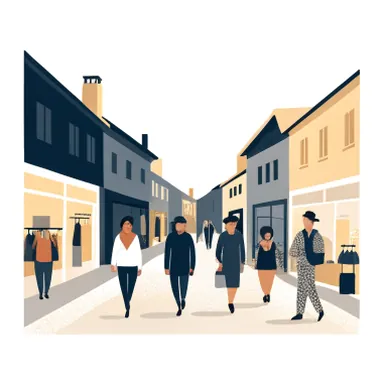
die Innenstadt, die Innenstädte 시내
In der Innenstadt gibt es viele Geschäfte.시내에는 가게가 많아요.
der Stadtrand 도시 변두리
Am Stadtrand ist es ruhiger.변두리는 더 조용해요.
ländlich 시골의
Die Gegend ist sehr ländlich.그곳은 시골 분위기가 짙어요.
die Gegend, die Gegenden 지역, 일대
Das ist eine schöne Gegend.좋은 동네예요.
das Umland 도시 둘레의 지역
Viele Familien ziehen ins Umland.도시 둘레로 이사하는 가족이 많아요.
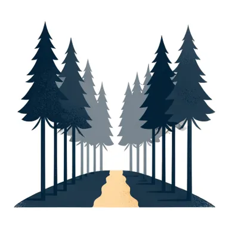
der Wald, die Wälder 숲
Hinter dem Dorf beginnt der Wald.마을 뒤부터 숲이에요.
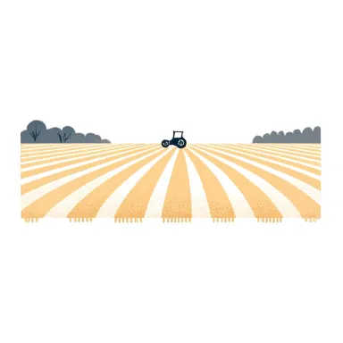
das Feld, die Felder 밭, 들
Neben dem Haus sind Felder.집 옆에 밭이 있어요.
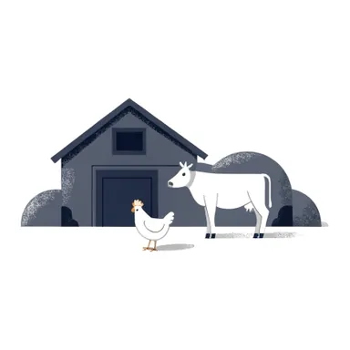
der Bauernhof, die Bauernhöfe 농장
Meine Großeltern hatten einen Bauernhof.조부모님은 농장을 하셨어요.
die Bevölkerung 인구, 주민
Die Bevölkerung in Leipzig wächst.라이프치히의 인구가 늘고 있어요.
zentral 중심에 있는
Die Wohnung liegt sehr zentral.그 집은 한복판에 있어요.
lebendig 활기찬
Leipzig ist eine lebendige Stadt.라이프치히는 활기찬 도시예요.
die Nachbarschaft 이웃, 동네
Die Nachbarschaft ist sehr nett.동네 사람들이 아주 친절해요.
umziehen (ist umgezogen) 이사하다
Wir sind im Sommer umgezogen.우리는 여름에 이사했어요.
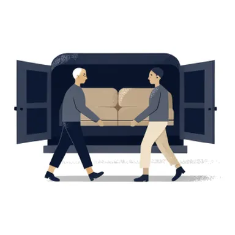
der Umzug, die Umzüge 이사
Der Umzug war anstrengend.이사가 힘들었어요.
aufwachsen (du wächst auf, ist aufgewachsen) 자라다
Ich bin in einem Dorf aufgewachsen.저는 마을에서 자랐어요.
der Hafen, die Häfen 항구
Hamburg hat einen großen Hafen.함부르크에는 큰 항구가 있어요.
die Lebensqualität 삶의 질
Die Lebensqualität ist hier hoch.여기는 삶의 질이 높아요.
die Lebenshaltungskosten 생활비
Die Lebenshaltungskosten sind in der Stadt höher.도시는 생활비가 더 들어요.
bezahlbar 값을 감당할 만한
Bezahlbare Wohnungen sind selten.값을 감당할 만한 집은 드물어요.
die Auswahl 고를 수 있는 폭
In der Stadt ist die Auswahl größer.도시에서는 고를 수 있는 것이 더 많아요.
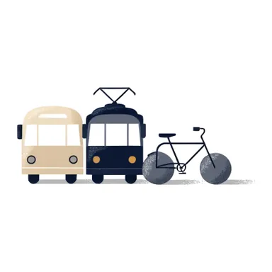
das Verkehrsmittel, die Verkehrsmittel 교통편
Welches Verkehrsmittel benutzt du?어떤 교통편을 이용해요?
der Nahverkehr 가까운 곳을 오가는 대중교통
Der Nahverkehr ist hier sehr gut.여기는 대중교통이 아주 잘돼 있어요.
die Entfernung, die Entfernungen 거리
Die Entfernung zur Arbeit ist groß.직장까지 거리가 멀어요.
entfernt 떨어진
Der Bahnhof ist zehn Kilometer entfernt.역은 10킬로미터 떨어져 있어요.
die Nähe 가까운 곳
Die Nähe zum Zentrum ist mir wichtig.저는 중심에서 가까운 것이 중요해요.
das Kulturangebot 문화 행사와 시설
Leipzig hat ein großes Kulturangebot.라이프치히는 문화 행사가 많아요.
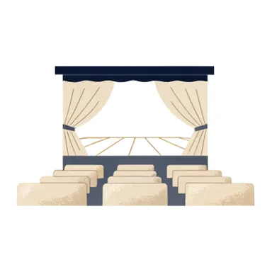
das Theater, die Theater 극장
Wir gehen heute ins Theater.우리는 오늘 극장에 가요.
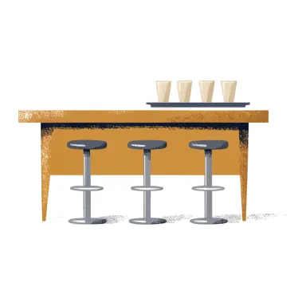
die Kneipe, die Kneipen 술집
In der Straße gibt es viele Kneipen.그 거리에는 술집이 많아요.
der Arbeitsmarkt 일자리 시장
Der Arbeitsmarkt ist in Großstädten besser.큰 도시는 일자리가 더 많아요.
die Hochschule, die Hochschulen 대학
Die Stadt hat zwei Hochschulen.그 도시에는 대학이 두 곳 있어요.
attraktiv 끌리는, 매력 있는
Die Stadt ist für junge Leute attraktiv.그 도시는 젊은 사람들에게 매력이 있어요.
hektisch 정신없는, 바쁜
Das Leben in der Großstadt ist hektisch.큰 도시의 생활은 정신없어요.
das Klima 기후
In Freiburg ist das Klima mild.프라이부르크는 기후가 온화해요.
das Budget, die Budgets 쓸 수 있는 돈
Mein Budget ist klein.저는 쓸 수 있는 돈이 적어요.
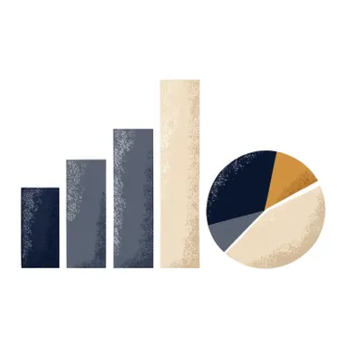
die Statistik, die Statistiken 통계
Die Statistik zeigt, wo die Mieten am höchsten sind.통계를 보면 어디 집세가 가장 높은지 알 수 있어요.
der Durchschnitt 평균
Im Durchschnitt pendeln die Leute vierzig Minuten.사람들은 평균 40분을 통근해요.
durchschnittlich 평균의
Die durchschnittliche Miete steigt.평균 집세가 오르고 있어요.
die Hälfte 절반
Die Hälfte möchte auf dem Land wohnen.절반이 시골에 살고 싶어 해요.
das Drittel 3분의 1
Ein Drittel wohnt in der Großstadt.3분의 1이 큰 도시에 살아요.
das Viertel 4분의 1
Ein Viertel fährt mit dem Rad.4분의 1이 자전거를 타요.
der Anteil, die Anteile 비율, 몫
Der Anteil ist gestiegen.그 비율이 올랐어요.
wachsen (du wächst, ist gewachsen) 자라다, 늘다
Die Stadt wächst schnell.그 도시는 빠르게 커지고 있어요.
niedrig 낮은
Die Mieten sind hier niedrig.여기는 집세가 낮아요.
je … desto ~할수록 더
Je größer die Stadt, desto höher die Mieten.도시가 클수록 집세가 높아요.
im Vergleich zu ~와 견주면
Im Vergleich zu Frankfurt ist Leipzig günstig.프랑크푸르트와 견주면 라이프치히는 싸요.
sich unterscheiden (hat sich unterschieden) 다르다
Die Städte unterscheiden sich stark.그 도시들은 많이 달라요.
doppelt so viel 두 배
Hier zahle ich doppelt so viel Miete.여기서는 집세를 두 배 내요.
genauso 똑같이
Die neue Wohnung ist genauso teuer wie die alte.새집은 옛집만큼 비싸요.
vor allem 무엇보다
Vor allem die Mieten sind ein Problem.무엇보다 집세가 문제예요.
이 과의 낱말로 여덟 문제를 풀어요.
줄을 누르면 소리가 나요. 명사 앞에 오면 비교하는 말에도 형용사 어미가 붙어요.
줄을 누르면 소리가 나요. je 뒤에도 desto 뒤에도 비교하는 말이 와요.
규칙
A2.1에서는 Leipzig ist größer als Freiburg.처럼 비교하는 말을 sein 뒤에 썼어요. 명사 앞에도 쓸 수 있어요. 그때는 -er 뒤에 보통 형용사와 똑같은 어미를 붙여요. groß는 größer가 되고, 여기에 어미 -e가 붙어서 die größere Stadt가 돼요.
| 형용사 | 비교 | 명사 앞 |
|---|---|---|
| klein | kleiner | eine kleinere Stadt |
| groß | größer | die größere Stadt |
| lang | länger | ein längerer Weg |
| gut | besser | das bessere Angebot |
주의 어미는 A2에서 배운 형용사 어미와 같아요. ein kleines Haus가 ein kleineres Haus가 되고, mit einem kleinen Budget가 mit einem kleineren Budget가 돼요. -er가 비교를 나타내고, 그 뒤의 글자가 격을 나타내요.
규칙을 보고 바로 확인해 보세요.
Wir suchen eine … Wohnung. 빈칸에 알맞은 말은 무엇인가요?
규칙
'가장 ~한'을 명사 앞에 쓸 때는 am을 빼고 -st- 뒤에 형용사 어미를 붙여요. 거의 늘 der, das, die와 함께 써요. am größten은 die größte Stadt가 되고, am besten은 das beste Essen이 돼요. 여럿일 때와 Dativ에서는 -sten이에요.
| sein 뒤 | 명사 앞 |
|---|---|
| am größten | die größte Stadt |
| am besten | das beste Essen |
| am höchsten | die höchsten Mieten |
| am wichtigsten | das wichtigste Argument |
주의 모양이 바뀌는 낱말을 기억하세요. gut, besser, am besten. viel, mehr, am meisten. hoch, höher, am höchsten. gern, lieber, am liebsten. 명사 앞에서 hoch는 c가 빠져서 ein hoher Preis, die hohen Mieten이 돼요.
규칙을 보고 바로 확인해 보세요.
Am Stadtrand stehen die … Häuser. 빈칸에 알맞은 말은 무엇인가요?
규칙
관사가 없으면 형용사가 관사의 일을 대신해요. 그래서 der, das, die의 끝 글자가 형용사에 붙어요. der 명사는 -er, das 명사는 -es, die 명사와 여럿은 -e예요. Dativ에서는 dem처럼 -em, der처럼 -er, 여럿은 -en이에요.
| 명사 | Nom. | Akk. | Dat. |
|---|---|---|---|
| der | guter Wein | guten Wein | gutem Wein |
| das | gutes Essen | gutes Essen | gutem Essen |
| die | frische Luft | frische Luft | frischer Luft |
| 여럿 | hohe Mieten | hohe Mieten | hohen Mieten |
주의 양을 정하지 않은 것과 여럿을 통틀어 말할 때 관사를 쓰지 않아요. frische Luft, gutes Essen, hohe Mieten이 그래요. 광고와 안내 글에도 많이 나와요. Schöne Wohnung mit großem Balkon. 여기에 -er를 더하면 비교가 돼요. Niedrigere Mieten, bessere Luft.
규칙을 보고 바로 확인해 보세요.
Bei … Wetter bleibe ich zu Hause. 빈칸에 알맞은 말은 무엇인가요?
규칙
두 가지가 함께 달라질 때 je … desto를 써요. je와 desto 바로 뒤에 비교하는 말이 와요. je 문장에서는 동사가 끝에 가고, desto 문장에서는 비교하는 말 바로 뒤에 동사가 와요. 동사 없이 짧게 말하기도 해요.
| je 문장 | desto 문장 |
|---|---|
| Je größer die Stadt ist, | desto höher sind die Mieten. |
| Je länger ich hier wohne, | desto besser gefällt es mir. |
| Je früher, | desto besser. |
주의 desto 자리에 umso를 써도 뜻이 같아요. Je früher, umso besser. 순서를 꼭 지키세요. je가 늘 앞에 와요.
규칙을 보고 바로 확인해 보세요.
Je weiter draußen, … günstiger. 빈칸에 알맞은 말은 무엇인가요?
듣고 알맞은 것을 고르세요.
어느 도시가 더 큰가요?
Leipzig ist die größere Stadt, aber Freiburg hat das schönere Wetter.
더 큰 집을 얻으려면 어떻게 해야 하나요?
Für eine größere Wohnung müssten wir an den Stadtrand ziehen.
프랑크푸르트에 가까우면 값이 어떤가요?
Je näher an Frankfurt, desto höher die Preise.
역은 얼마나 떨어져 있었나요?
Der nächste Bahnhof war zehn Kilometer entfernt.
라디오에서 통근하는 사람과 이야기해요. 듣고 답하세요.
Fünfzig Kilometer bis zur Arbeit
Reporterin Herr Kraft, Sie fahren jeden Tag fünfzig Kilometer nach Frankfurt. Warum wohnen Sie nicht in der Stadt?
Herr Kraft Weil die Mieten dort viel höher sind. In unserer Kleinstadt haben wir für das gleiche Geld ein Haus mit Garten.
Reporterin Und der längere Arbeitsweg stört Sie nicht?
Herr Kraft Doch. Ich sitze jeden Tag zwei Stunden im Zug. Aber dort lese ich oder schlafe.
Reporterin Würden Sie wieder aufs Land ziehen?
Herr Kraft Ja. Je älter die Kinder werden, desto mehr Platz brauchen wir. Und abends haben wir die bessere Luft.
Wie weit fährt Herr Kraft jeden Tag zur Arbeit?
Warum wohnt er nicht in Frankfurt?
Herr Kraft fährt mit dem Auto zur Arbeit.
날마다 두 시간 기차를 타요.
다시 고른다면 Herr Kraft는 어떻게 하겠다고 하나요?
설문 결과를 전하는 글이에요. 읽고 답하세요.
Wo würden Sie am liebsten wohnen?
Eine Zeitung fragte 2.000 Erwachsene: Wo würden Sie am liebsten wohnen?
Das Ergebnis: Die meisten möchten nicht in der Großstadt leben. Nur ein Fünftel (20 Prozent) wünscht sich ein Leben in einer großen Stadt.
Am beliebtesten ist die Kleinstadt: 35 Prozent würden am liebsten dort wohnen. Fast ein Drittel (30 Prozent) träumt vom Leben auf dem Land. 15 Prozent möchten am Stadtrand wohnen.
Die wichtigsten Gründe für das Land sind mehr Ruhe, niedrigere Mieten und bessere Luft.
Für die Stadt sprechen kürzere Wege, bessere Verkehrsmittel und ein größeres Angebot an Arbeitsplätzen.
Interessant: Je jünger die Leute sind, desto lieber wohnen sie in der Stadt.
Wo möchten die meisten wohnen?
Die Hälfte möchte in der Großstadt wohnen.
5분의 1, 곧 20퍼센트예요.
Wie viele träumen vom Leben auf dem Land?
Was spricht für die Stadt?
Junge Leute wohnen lieber in der Stadt als ältere.
명사 앞의 비교예요. 알맞은 모양을 고르세요.
Leipzig ist die Stadt.
라이프치히가 더 큰 도시예요.
Wir suchen eine Wohnung.
우리는 더 작은 집을 찾아요.
In Freiburg gibt es Mieten.
프라이부르크는 집세가 더 높아요.
Dohyun hätte einen Arbeitsweg.
Dohyun은 출퇴근길이 더 길어질 거예요.
der 명사의 Akkusativ는 -en이에요.
Sora träumt von einem Leben.
Sora는 더 조용한 삶을 꿈꿔요.
Dativ에서는 -en이에요.
Das ist ein Angebot.
그게 더 좋은 제안이에요.
명사 앞의 '가장 ~한'이에요. 알맞은 모양을 고르세요.
Berlin ist die Stadt in Deutschland.
베를린은 독일에서 가장 큰 도시예요.
Die Zugspitze ist der Berg in Deutschland.
추크슈피체는 독일에서 가장 높은 산이에요.
Das ist das Restaurant in der Stadt.
거기가 그 도시에서 가장 좋은 식당이에요.
Am Stadtrand stehen die Häuser.
변두리에 가장 비싼 집들이 있어요.
Was ist für dich das Argument?
당신에게 가장 중요한 근거는 뭐예요?
관사가 없어요. 형용사의 알맞은 끝을 고르세요.
Auf dem Land gibt es Luft.
시골에는 맑은 공기가 있어요.
Mit Budget lebt man in Leipzig besser.
돈이 넉넉하지 않으면 라이프치히에서 지내기가 더 좋아요.
das 명사의 Dativ는 -em이에요.
In der Stadt gibt es Mieten.
도시는 집세가 높아요.
Ich suche eine Wohnung mit Balkon.
넓은 발코니가 있는 집을 찾아요.
Essen findet man überall.
맛있는 음식은 어디에나 있어요.
Bei Wetter bleibe ich zu Hause.
날씨가 나쁘면 집에 있어요.
괄호 안의 낱말을 알맞은 모양으로 쓰세요.
Freiburg ist als Leipzig. (klein)
프라이부르크는 라이프치히보다 작아요.
Berlin ist die Stadt in Deutschland. (groß)
베를린은 독일에서 가장 큰 도시예요.
Auf dem Land ist die Luft als in der Stadt. (gut)
시골은 도시보다 공기가 좋아요.
Je weiter draußen, desto . (günstig)
멀리 나갈수록 더 싸요.
Das ist das Haus in der Straße. (teuer)
그 거리에서 가장 비싼 집이에요.
낱말을 순서대로 눌러 문장을 만드세요.
도시가 클수록 집세가 높아요.
오래 생각할수록 더 어려워져요.
라이프치히가 더 큰 도시예요.
베를린은 독일에서 가장 큰 도시예요.
우리는 넓은 발코니가 있는 집을 찾아요.
뜻이 반대인 말을 짝지으세요.
빈칸에 알맞은 낱말을 쓰세요.
Ich bin in einem Dorf .
저는 마을에서 자랐어요.
Der Bahnhof ist zehn Kilometer .
역은 10킬로미터 떨어져 있어요.
Die möchte auf dem Land wohnen.
절반이 시골에 살고 싶어 해요.
Wir sind im Sommer .
우리는 여름에 이사했어요.
듣고 그대로 써 보세요.
Leipzig ist die größere Stadt. 라이프치히가 더 큰 도시예요.
Je größer die Stadt, desto höher die Mieten. 도시가 클수록 집세가 높아요.
Auf dem Land gibt es frische Luft. 시골에는 맑은 공기가 있어요.
Leipzig ist die größere Stadt. 라이프치히가 더 큰 도시예요.
In Freiburg gibt es höhere Mieten. 프라이부르크는 집세가 더 높아요.
Im Vergleich zu Frankfurt ist Leipzig günstig. 프랑크푸르트와 견주면 라이프치히는 싸요.
Die Städte unterscheiden sich stark. 그 도시들은 많이 달라요.
Was spricht für Leipzig? 라이프치히는 뭐가 좋아요?
Für die Stadt sprechen kürzere Wege. 도시는 다니는 길이 짧아서 좋아요.
Dagegen spricht der längere Arbeitsweg. 출퇴근길이 길어지는 것이 걸려요.
Das ist ein starkes Argument. 그건 강한 근거예요.
Die Hälfte möchte auf dem Land wohnen. 절반이 시골에 살고 싶어 해요.
Fast ein Drittel wohnt in der Großstadt. 3분의 1 가까이가 큰 도시에 살아요.
Im Durchschnitt pendeln die Leute vierzig Minuten. 사람들은 평균 40분을 통근해요.
Je jünger die Leute, desto lieber wohnen sie in der Stadt. 젊은 사람일수록 도시에 살고 싶어 해요.
Ich träume von einem Haus mit Garten. 저는 마당이 있는 집을 꿈꿔요.
Am liebsten würde ich am Stadtrand wohnen. 변두리에 사는 게 가장 좋겠어요.
Die Nähe zum Zentrum ist mir wichtig. 저는 중심에서 가까운 것이 중요해요.
Das wäre mir zu weit. 저한테는 너무 멀어요.
Je länger ich überlege, desto schwieriger wird es. 오래 생각할수록 더 어려워져요.
Das wichtigste Argument ist für mich das Geld. 저한테 가장 중요한 근거는 돈이에요.
Ich habe mich für Leipzig entschieden. 저는 라이프치히로 정했어요.
Bis wann musst du dich entscheiden? 언제까지 결정해야 해요?
과제 고르기
역할 대화와 말하기, 쓰기 과제는 대학 생활과 직장 생활 두 가지예요. 하나를 고르면 다음 과에서도 그쪽 과제가 나와요. 언제든 바꿀 수 있어요.
대화 A에서 역할을 하나 고르세요. 상대의 말은 음성으로 나오고, 내 차례에는 직접 말해요.
대화 B에서 역할을 하나 고르세요. 상대의 말은 음성으로 나오고, 내 차례에는 직접 말해요.
내가 사는 곳을 떠올리고 칸을 채우세요. 완성된 문장을 소리 내어 읽어 보세요.
Ich wohne in Frankfurt, in der Nähe vom Zentrum.
Mir gefallen hier vor allem die kurzen Wege.
Ein Problem sind die hohen Mieten.
Am liebsten würde ich in einer kleineren Stadt am Meer wohnen.
석사 과정을 할 도시로 라이프치히와 프라이부르크를 놓고 고민하고 있어요. 친구가 물어요.
라이프치히는 더 큰 도시이고 집세가 더 낮아요. 문화 행사도 더 많아요. 프라이부르크는 더 작고 조용하고 자연이 가까워요. 하지만 집세가 더 높고 집 구하기가 가장 어려워요. 돈이 넉넉하지 않아서 라이프치히로 정하려고 해요.
친구가 물어요. 쪽지를 보고 답하세요. 질문을 듣고 소리 내어 답한 뒤 예시 답과 비교해 보세요.
Du suchst auch eine Stadt für den Master? Welche Städte hast du auf der Liste? 석사 과정을 할 도시를 찾고 있어요? 어느 도시를 적어 놨어요?
Leipzig und Freiburg. Es sind zwei ganz verschiedene Städte.
Was ist der größte Unterschied? 가장 크게 다른 점이 뭐예요?
Leipzig ist die größere Stadt. Freiburg ist kleiner und ruhiger.
Und die Mieten? 집세는요?
In Leipzig sind die Mieten niedriger. In Freiburg ist die Wohnungssuche am schwierigsten.
Was spricht für Freiburg? 프라이부르크는 뭐가 좋아요?
Die Natur. Dort gibt es frische Luft und den Schwarzwald in der Nähe.
Und wofür entscheidest du dich? 그래서 어디로 정해요?
Für Leipzig. Mit kleinem Budget lebt man dort besser.
Zwei Städte im Vergleich
두 도시를 견주고 어디로 가기로 했는지 친구에게 알리는 글을 써 보세요. 일곱 문장쯤 써요.
Hallo Paula, ich habe mich endlich entschieden: Ich mache den Master in Leipzig. Leipzig ist die größere Stadt und hat ein größeres Kulturangebot. Freiburg liegt schöner, aber dort gibt es höhere Mieten. Mit kleinem Budget lebt man in Leipzig besser. Die Wohnungssuche ist dort auch einfacher. Je länger ich überlegt habe, desto klarer wurde die Entscheidung. Natürlich werde ich die Berge vermissen. Besuchst du mich im Herbst? Viele Grüße, Minji
다 쓴 뒤에 확인해 보세요.
회사가 함부르크에 새 사무실을 열고, 나에게 그 사무실을 맡아 달라고 했어요. 동료가 물어요.
함부르크는 더 큰 도시이고, 새 자리는 급여가 더 높아요. 하지만 가족에게는 2년 사이에 두 번째 이사예요. 더 큰 집을 얻으려면 변두리로 가야 하고, 그러면 출퇴근길이 더 길어져요. 2월 말까지 결정해야 해요.
동료가 물어요. 쪽지를 보고 답하세요. 질문을 듣고 소리 내어 답한 뒤 예시 답과 비교해 보세요.
Stimmt es, dass du ein Angebot aus Hamburg hast? 함부르크에서 제안을 받았다는 게 정말이에요?
Ja. Ich könnte dort das neue Büro leiten.
Was spricht für Hamburg? 함부르크는 뭐가 좋아요?
Es ist die bessere Stelle mit dem höheren Gehalt. Und Hamburg ist die größere Stadt.
Und was spricht dagegen? 걸리는 점은요?
Für meine Familie wäre es der zweite Umzug in zwei Jahren.
Wie sind die Wohnungen dort? 거기 집은 어때요?
Teuer. Für eine größere Wohnung müssten wir an den Stadtrand ziehen.
Wann entscheidest du dich? 언제 결정해요?
Bis Ende Februar. Je mehr ich weiß, desto leichter wird die Entscheidung.
Frankfurt oder Hamburg?
두 도시를 견주고 어떻게 정했는지 동료에게 알리는 글을 써 보세요. 일곱 문장쯤 써요.
Lieber Markus, du hast gefragt, wie wir uns entschieden haben. Wir waren am Wochenende in Hamburg. Hamburg ist die größere Stadt, und die neue Stelle wäre interessanter. Dort hätte ich das höhere Gehalt, aber auch den längeren Arbeitsweg. In Frankfurt haben wir die kürzeren Wege und gute Freunde. Für meinen Sohn wäre ein neuer Umzug am schwierigsten. Je länger wir überlegt haben, desto klarer wurde es: Wir bleiben in Frankfurt. Viele Grüße, Minji
다 쓴 뒤에 확인해 보세요.
Ich kann zwei Orte vergleichen und Vor- und Nachteile nennen.두 곳을 견주고 좋은 점과 나쁜 점을 말할 수 있어요.
Ich kann einfache Zahlen aus einer Umfrage wiedergeben.설문에 나온 쉬운 수를 전할 수 있어요.
Ich kann beschreiben, wie und wo ich gern leben würde.어디에서 어떻게 살고 싶은지 설명할 수 있어요.
Ich kann mit je … desto sagen, wie zwei Dinge zusammenhängen.je … desto로 두 가지가 어떻게 이어지는지 말할 수 있어요.